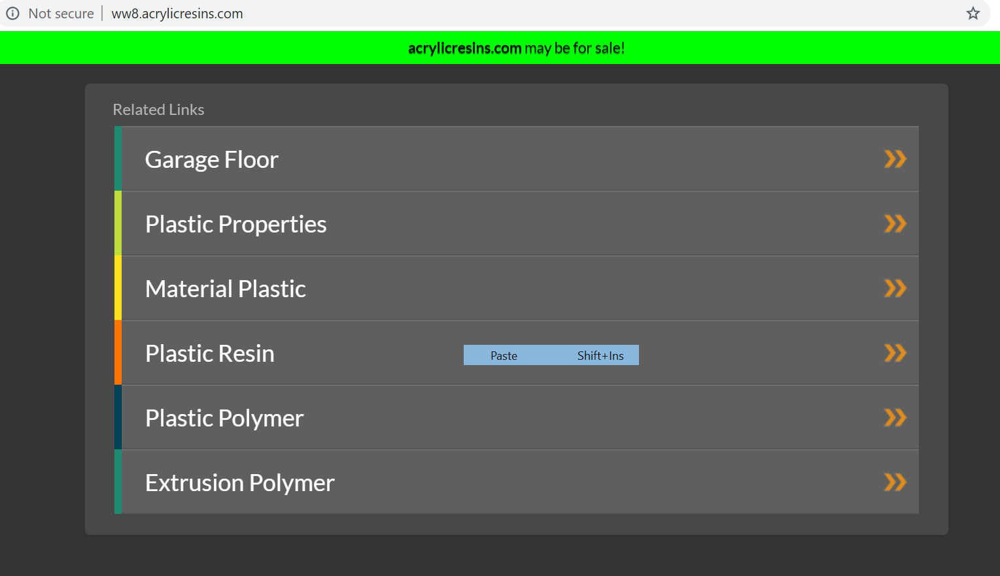

Have you ever been to Boston? If not, you should. It's an amazing city with red buildings all around and of course it's home to the smart brains of Harvard and MIT. But the city is so expensive! Where would you like to stay? Do you need TV? Or do you have pets with you?
We built this navigating tool for Airbnb homes in and around Boston. The user can choose their preferences - apt vs house, number of bedrooms, bathrooms, amenities like AC, TV etc.
We also built a predictive model to model the prices of these listings using their features and achieved a R squared value of 0.74.
If you've been on Quora, you must have seen tons of questions that are asked and are often merged into one, so that it's easy for any user to answer them. This was the purpose of the project - to classify question pairs as duplicate.
Based on the paper, Y. Li, D. McLean, Z. A. Bandar, K. Crockett, et al., “Sentence similarity based on semantic nets and corpus statistics,” IEEE Transactions on Knowledge & Data Engineering, no. 8, pp. 1138–1150, 2006.
Convolutional Neural Networks (CNN) have traditionally been used for image classification tasks and moreso in the field of computer vision.
And conventionally LSTM networks have been used for textual data to capture history of the sequence.
But we used the architecture defined in the paper mentioned below and tested the performance of VD-CNN on 8 text classification datasets. Then we compared their performance on various LSTM architectures, just to see of the latter was better.
Turns out the VDCNN outperformed the LSTM network in many cases. We used different embeddings, stacked LSTM and tuned various hyperparameters.
Based on Very Deep Convolutional Networks for Text Classification by Conneau, Schwenk, Barrault, and Lecun (2016)
I worked on this project while interning at GoDaddy. They have certain domains that they sell to customers but the customers "park" these domains with GoDaddy for monetizing. Let's say something like a typo domain name "busines.com" or "helokitty.com" is an easy way to earn some money by just placing some advertisements on it.
But when advertising, Google takes in the domain name and produces certain keywords. The problem is in Google's algorithm to tokenize some of the domains which may contain some proper nouns. Sometimes the domain is language-specific too. Hence if possible in an application, it's better to give Google the keywords for which the advertisements might be shown. I dealt with a dataset containing ~300k domains and worked through a rule-based algorithm, PMI based model and then a seq2seq RNN.
To illustrate, let's take the example of this domain, acrylicresins.com. Without the algorithm, the keywords on the landing page looked like,

But with the algorithm, the new keywords generated were:
Working on detecting a refrigerant leak was my main project at Ecofrost. Ecofrost is an energy-focussed company that provides renewable energy based products.
One of their products is a solar-powered cold storage room for farmers. Since the refrigerant is the main source of cooling the storage room, once it leaks, the performance of the system goes down.
Let's say we store green peppers at a temperature of 10 degrees Celsius. If the refrigerant leaks and it's moderately hot outside the system may not be able to maintain the tempearture at 10 degrees, because the door may keep opening and closing when loading the produce.
Hence this problem now becomes important. We also see that certain parameters display certain trends when there is a leak happening. Like the current flow in the system might go down, the pressure of the flow of refrigerant may go down etc.
Now we had the data for these parameters coming in from sensors across the sites and we decided to build a model to detect when the leak is happening. We collected healthy data for the same machines for which we knew there was a leak and then collected the data for when the leak was occurring and decided to train a classification model.
We used logistic regression with feature extraction, KNN and RNN (LSTM) models. Achieved an average AUC score of 0.79.
I also gave a talk about this at MuPy 2017. Feel free to check the slides out here.
In cricket, there are finite number of possible outcomes once a ball is bowled. Each ball represents a transition from one state to the other. So in total, if we consider our beginning as a separate state, there are 301 possible states, one for after each ball, assuming no extras are bowled during the innings.
This feature makes it possible to use Markov chain to model the probability of a match’s innings going from one state to the other. We model the batting order - how many runs would a particular order of players (lineup) make given one ball to the next?
We then compare a few batting orders - like the best batsman to the best bowler (skill of batsmen decreases in the lineup) and the "worst" lineup where the batting skill increases as the lineup progresses. Do check out the git repo!
Ecologists are often interested in approximating the distributions of plant species at climate extremes since this helps in analyzing their current and future spatial patterns.
In this project, we tried to approximate the distribution of a subspecies of Alder, Alnus fructiosa using these three primary sources of evidence:
Spatial distribution maps (SDM): Map of probabilities of distribution of Alnus fructiosa derived from the effect of climate on the subspecies.
Genetic data: Derived from cluster analysis of lineages. Probability of each lineage of the subspecies at certain locations.
Pollen Data: Pollen evidence suggesting presence of this taxa in (Pollen percentage)
Bayesian Hierarchical Models split a complicated model into three basic components. The data model occupies one level of the hierarchy, while the process
model resides below it. Typically, a third hierarchical level contains statistical models, also called priors, for unknown parameters that include additional
physical information. The levels are formally generated by a series of conditioning steps where one level is conditioned on knowledge of the levels below
it. We used Gibbs sampling to sample from the conjugate posterior distributions and a random-walk Metropolis-Hastings sampler for the non-conjugate posterior distributions.